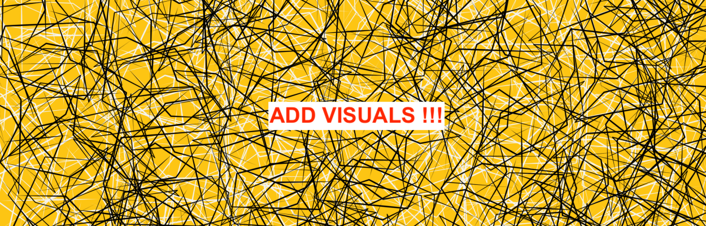
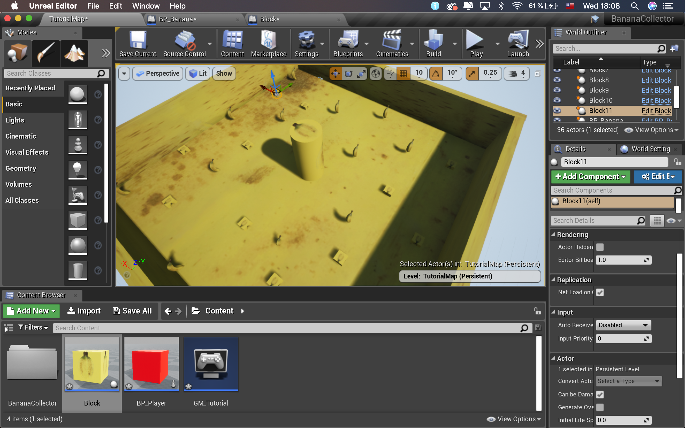
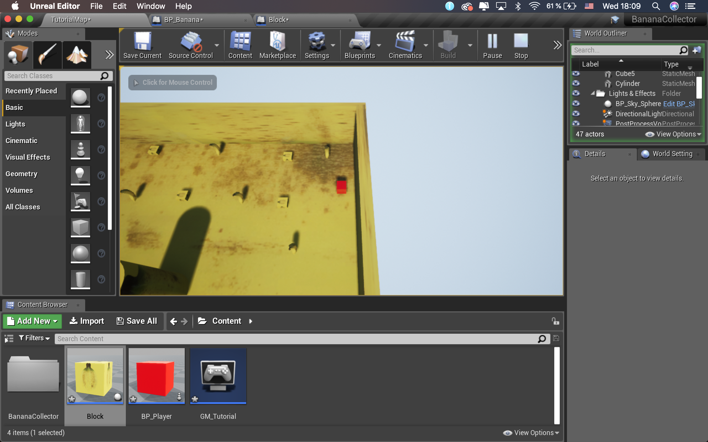
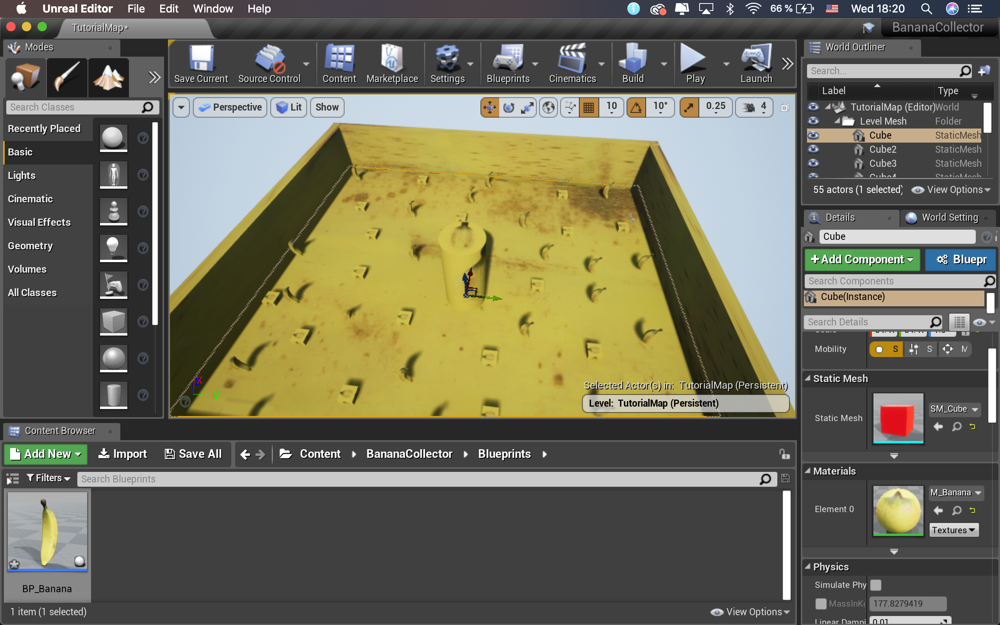

Art and museums are not accessible for everyone. Most of the time interesting pieces and important milestones of history are scattered throughout the world. Thus using VR technology you can create a museum where you can go to in order to view any art or important piece of history you are interested in. While wearing VR gear and walking in a basically straight line is not like seeing it in reality it is the closest thing the majority of the world would be able to grasp due to the restrictions of travel and budget. Thus interacting with art at your local VR museum creates a unique opportunity. Another benefit of a VR museum is the fact that the users can interact with the art, maybe manipulate it, enhance or deconstruct it virtually in order to see it true self from every angle offering an maybe sometimes more appealing vision of the art and making it dynamic and interactive.
The current state of healthcare is moving towards individual diagnosis and treatment. A combination of AR and VR devices open up the opportunity of explaining to the patients what is or will happen to them. AR simulations on their own body could for example show them why they are ill right now and show what will be worked on. It allows the patient to grasp the problem easier since he can see and interact with the disease rather than just hearing words that the patient might not understand and or is not able to visualise. Another grand opportunity lies in the recovery period. In order to recover properly and check in with their patients doctors then could follow up and communicate with their patients in VR sittings allowing for a more comfortable patient to doctor logistic.
The VR world offers many possible improvements and new training techniques across the board. Athletes will eventually be able to analyse their own and also the competitions of their opponents. Being able to slip into the competitions while they happened will allow athletes to analyse themselves and their opponent to the finest degree. And visualise what needs to be changed or improved. If for example a track athlete is being told by his/her coach to stand differently at the start it is hard to improve and adapt to the vision of the coach. The VR gear allows the athlete to see himself and allows the coach to literally point at the positions that need improvement.
During my research, I came across the use of VR and MR for medical students and I think it is a great idea. Implementing this technology to a medicine study can be beneficial not just for the students, but also for the patients. The students can have a more “hands-on” experience when looking at a medical problem in a real-life size. They also have the opportunity to practise surgeries and with the right additional equipment, this can feel very real. In addition, no lives have to be threatened in the process of teaching a doctor and even younger students, who normally wouldn’t be allowed to perform surgeries could get a chance to learn more from experience. I think these methods could be used also in difficult decision-making situations during a surgery where the doctor gets a change to try out a move first and see the simulation of its’ impact instead of directly cutting.
For our Shared Spaces project, we had the honour to work with a very innovation-open architectural company Heembouw. Heembouw implemented the usage of VR to diminish the cost for errors and increase their efficiency. Their VR set is used to showcase the design inside-out. The client gets a chance to literally walk around the building in making and therefore imagine the product better. Based on the VR visualisations, client gives better feedback and Heembouw can implement these changes before they start to build, which saves both time and money for future alterations. I think this is a very smart move. I would love to see the usage of VR in architecture for more purposes. As a UX designer in the field of architecture, I would do a user testing of a building to see how the users make use of the space and how intuitive the usage would be and make changes to the environment early in the process of designing the space. This would contribute to a more user-friendly spaces users would love to spend time in.
Sources:
https://innovatie.heembouw.nl/innovatie-magazine-2019#!/virtual-reality
As technology advances our strategies in implementing and using them have to do that too. VR in marketing can be the next big thing, as it allows customers to view the product in 3D and how it interacts over a period of time. 2014 TOPSHOP was the first brand to capture a Catwalk in VR allowing them to show off their product to customers as if they were part of the Catwalk no matter where they are. It allows the customers to get a precise idea and image of how the clothes move and fit onto the models. A lot of customers loved the idea and overall results were great hinting at VR’s future in marketing shifting it from 2D static products to 3D interactive and mobile advertisements.
Sources:To expand my Unreal Engine assignment and make it more interactive, I decided to implement more obstacles in form of boxes. To make the game more difficult, I made the boxes the same colour and texture as the bananas. And that inspired me to colou the whole environment in that colour, to make the obstacles as well as the bananas less visible and therefore harder to avoid/collect. For more emersion and a better player experience, I turned the camera view to third person view. Thi way, it is easier for the player to feel like he/she is actually moving in the virtual environment.
  I think VR is very cool but so far it has been mostly used for gaming and is seen mostly as something that can’t really be implemented into an everyday life. Maybe it is the bulky glasses or maybe the non-practicality of what one needs, but it has been out there for a pretty long time and it just doesn’t seem to find its way into the everyday routines of normal people. A very interesting design challenge would be trying to find a really beneficial way how to do this. When it comes to AR, I think it faces a very similar problem. AR has been used rather for entertainment. There have been some attempts of making it more useful (IKEA or Apple Measure App) but I think the technology isn’t quite there yet. We might have to wait for a little longer to use AR for something more than “just” a projection.